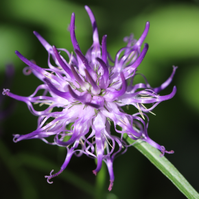

Zapewnia dodatkowe wsparcie w zwalczaniu stanów bólowych i zapalnych. Skoncentrowane składniki aktywne, opracowane we współpracy z lekarzami weterynarii, przynoszą szybkie i zauważalne efekty, szczególnie korzystne dla zwierząt z poważnymi problemami stawowymi.

Tylko jedna porcja dziennie.
To nie tylko wygoda, ale również gwarancja, że Twoje zwierzę
otrzymuje wszystko, czego potrzebuje, aby cieszyć się zdrowiem i
aktywnością na długo. Skorzystaj z zalet Arthrohard i zobacz różnicę
w komforcie życia swojego zwierzęcia.
Glukozamina jest naturalnym składnikiem chrząstki. Dodatek glukozaminy przyczynia się do zwiększenia produkcji glikozaminoglikanów (m.in. siarczanu keratanu, heparanu, kwasu hialuronowego), które pomagają w odbudowie chrząstki, co jest szczególnie korzystne dla zwierząt ze zmianami zwyrodnieniowymi stawów.
Chondroityna, podobnie jak glukozamina, jest składnikiem chrząstki. Chondroityna pomaga zwalczać enzymy, które niszczą chrząstkę, a także pomaga chrząstce zatrzymać wodę, co jest ważne dla jej sprężystości i absorpcji wstrząsów.
Kwas hialuronowy jest kluczowym składnikiem płynu stawowego, który działa jak smar i amortyzator dla stawów. Suplementacja kwasem hialuronowym może pomóc w utrzymaniu prawidłowej objętości i konsystencji płynu stawowego.
Czarci pazur jest rośliną, która ma właściwości przeciwzapalne i przeciwbólowe. Może to pomóc zwierzętom, które doświadczają bólu i stanu zapalnego związanego z problemami ze stawami.
Witamina C jest potężnym przeciwutleniaczem, który może pomóc w ochronie stawów poprzez neutralizację wolnych rodników, które mogą uszkadzać chrząstkę. Ponadto, witamina C odgrywa ważną rolę w produkcji kolagenu, kluczowego składnika chrząstki.
Metylosulfonylometan, czyli MSM, to naturalny związek siarki, który pomaga w utrzymaniu zdrowych stawów poprzez zmniejszenie stanu zapalnego i bólu. MSM może również pomagać w produkcji kolagenu, co przyczynia się do zdrowia chrząstki stawowej.